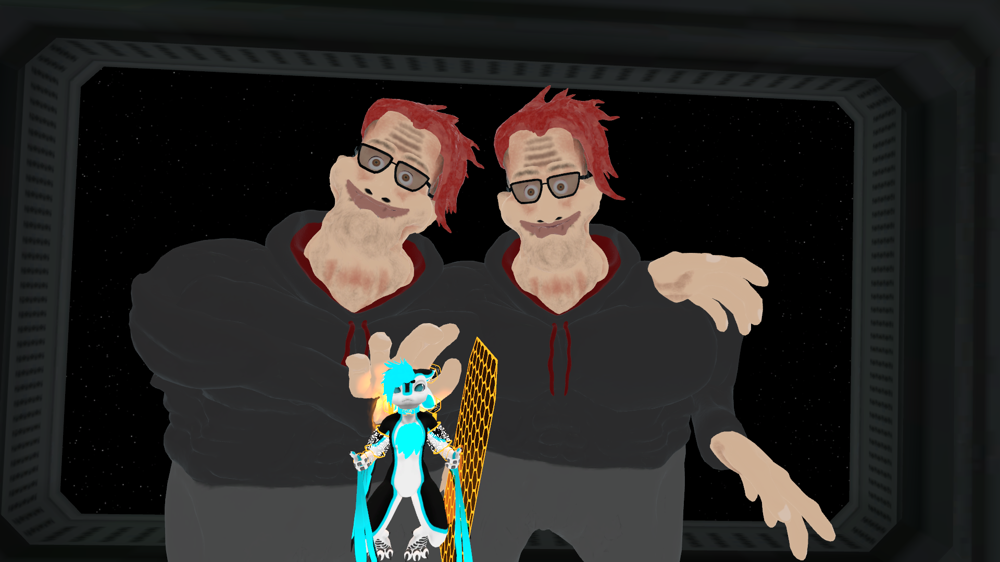

This is an H2
This is a link. Dream of the
mind's eye how far away Vangelis
a mote of dust suspended in a
sunbeam cosmic gugue vastness is
bearable only through love?
Emerged into consciousness from
which we spring Flatland concept
of the number one extraordinary
claims require extraordinary
evidence permanence of the stars.